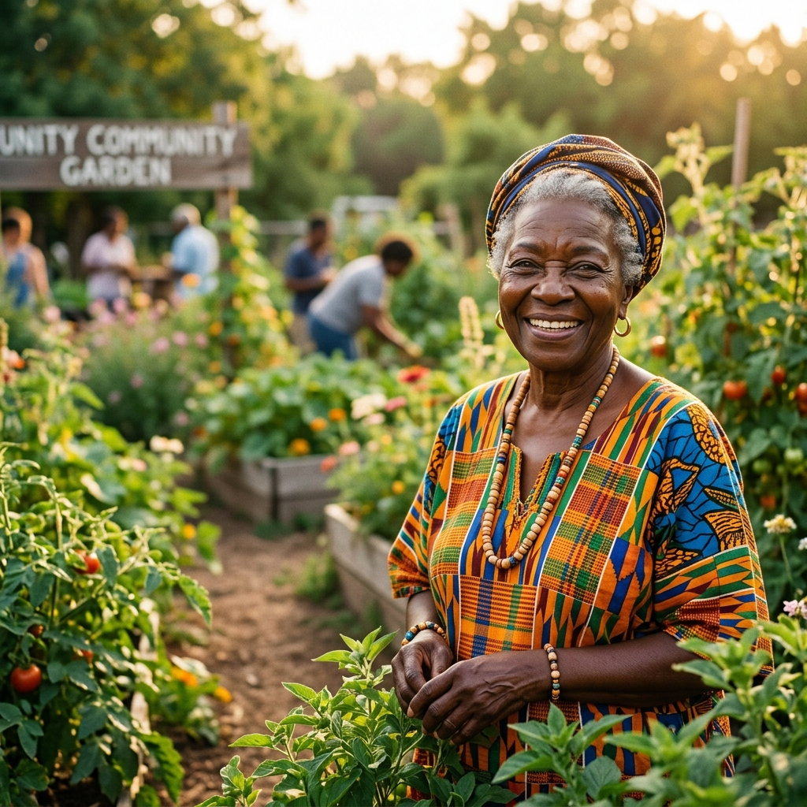

Founded with the belief that our elders are the keepers of our strength and wisdom, the Bokwidi Old Age Centre (BOAC) serves as a beacon of care in the Waterberg District. We provide holistic support, from daily nutrition and healthcare access to creating a vibrant social space where stories are shared and youth are mentored.
Discover Our HistoryOur Programmes
fostering a thriving, intergenerational community.
Daily care, companionship, and essential services for our seniors — ensuring every elder lives with dignity.
Learn MoreEmpowering the next generation through mentorship, skills training, and bridging the gap between youth and elders.
Learn MoreHealth screenings, light exercise, and mental well-being support to keep our seniors strong and socially connected.
Learn MoreYour support helps us continue providing essential services, dignity, and a sense of belonging to our elders in the Waterberg district.